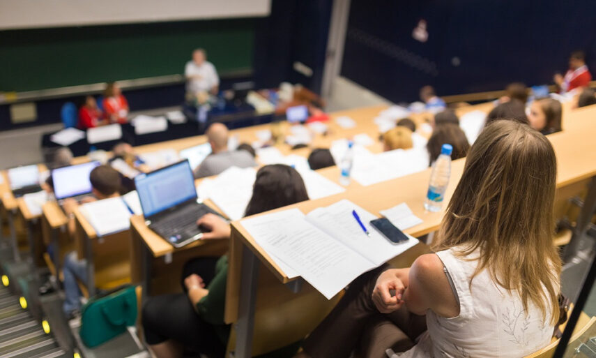

BME Hallgatói Portfolió
Nagy Zoltán Dávid - Energetikai mérnök (gólya)

Tanulmányok
Tanulmányaimat az Ady általános iskola után. A Zrínyi Miklós Gimnáziumban folytattam ahol 8 évet töltöttem. Középiskolai tanulmányaimat befejezve pedig a BME Energetikai mérnökön váltam 2024 szeptemberében gólyává Mindhárom iskolában nemcsak a kapcsolatok kiépítésére törekedtem hanem tanulmányaim magas szintű elvégzésére. A Zalaegerszeg Zrínyi Miklós Gimnázium segített mind az informatika ,matematika ,fizika valamint kémia magasabb szintű tanulásában ezzel segítve egyetemi éveimet. Középiskolai éveim alatt hála nyelvtanáraimnak valamint magán tanáromnak mind német nyelvből mind angol nyelvből B2-es szintű nyelvvizsgát szereztem valamint angol nyelvből C1 nyelvvizsgát is sikeresen teljesítettem 12. évfolyam során. Tanulmányaim során informatikából és Matematikából valamint 2 évre Történelemből fakultáción tanultam ahol egyetemi szinten tanítottak minket. Informatikából tanultam programozást C# valamint C++ nyelven is amivel később az Érettségimet is megírtam. Tanulmányaimat BME-n Energetikai mérnök szakon akartam folytatni tanulmányaimat ahol informatikai, matematikai valamint fizikai tudásomat hasznosíthatom. BME barátságos közege valamint az előadások ,laborok és gyakorlatok 100% részvételére törekszem ,hogy későbbiekben magas szinten és eredményekkel készen álljak a cégek szolgálatára, vagy saját cégem vezetésére.

Célok
Az egyetem alatt a kapcsolat kiépítésre és a tanulmányaim magasszintű elvégzésére törekszem, célom ,hogy a jövőben nem csak csatlakozni tudjak a munkavilágához ,de igen hasznos tagja is legyek. Céljaim közé tartozik még a zenei irány amelyet iskola mellett próbálok kibontakozni ezzel korombeli fiatalok segítségével és más hasonló érdeklődési körbe tartozó emberekkel dolgozva mellékállásban szeretnék pénz keresni és hobbimat magasabb szintre vinni. Ezenfelül foglalkozni szeretnék egyéb dolgokkal mint játék fejlesztés vágás és más egyéb tartalomgyártói feladatok ,amivel informatikai tudásom tudom iskolán kivül is magas szintre helyezni, célom a média világának irányait elsajátítani ,valamint abban dolgozó emberek megismerése és együtt dolgozás velük , itt is célom különböző munkák szerzése amivel segítem megélhetésem az egyetem mellett.